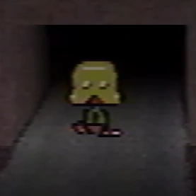

Channel
- This article is about the YouTube channel that the Petscop videos are posted on. For information about the series, see Petscop. For other uses, see Petscop (disambiguation).
{kind=link}

{kind=link}
The default profile picture of the channel.
The YouTube channel titled "Petscop" was created on March 11, 2017 to host the videos of the Petscop series.
In-universe, the channel was originally created by Paul to show recordings of a PlayStation game titled "Petscop" to his friend, Belle. However, sometime between the uploads of Petscop 10 and Petscop 11, he gave control of the channel to someone else he is familiar with.
About section
The following details the changes to the YouTube channel's about page.
June 8, 2017:
The description changed to the following:
"Rainer" gave this gift to us on Christmas 1997 and 2000. It was the single longest day of our lives. We were all certain he was dead at the time. He had been missing since June 1997 and 2000.
We're not as concerned about these things now. Please enjoy the recordings! We do. :)
September 10, 2017:
The following was amended to the bottom of the prior description:
For now, there is nothing to do. We are waiting patiently for Paul! When the time comes, we will turn on the light.
December 24, 2017:
The description changed to the following:
Everything we wish to say is below:
The purpose of this YouTube channel is to preserve and display the recordings within the video game "Petscop" while keeping some of their content private.They were first given to us as a Christmas present, many years ago. The game had an interesting journey, before and after that day.
Paul created some additional recordings in 2017 as a way to show Petscop gameplay to his friend. He created this account in order to upload those additional recordings in video format. He later passed ownership of the channel to us, but continued to record himself at our strong suggestion. Though he had issues with the arrangement, these have finally been settled.
Please enjoy the recordings in Petscop! We do. :)
April 1, 2018:
The :) at the end of the description is replaced with :( for approximately 30 minutes.
June 27, 2018:
The following was amended to the bottom of the prior description:
Update for 6/27: Paul is OK. His work is bearing fruit, and there will be a public compilation video of his "Attempts". He appreciates that people care about him so much.
July 17, 2018:
The prior amendment was removed from the description.
October 31, 2018:
The description changed to the following:
Recordings of a video game.
January 26, 2019:
The description changed to the following:
Some select "Petscop" recordings.
In a way, recordings have the power to raise the dead. They're kind of scary.
Currently hunting for hidden content.
April 2, 2019:
The description changed to the following:
Some select "Petscop" recordings.
In a way, recordings have the power to raise the dead. They're kind of scary.
We finished our long Easter egg hunt.
September 1, 2019:
The description changed to the following:
Some select "Petscop" recordings.
In a way, recordings have the power to raise the dead. They're kind of scary.
Thank you for watching. : )
November 15, 2019:
The : ) at the end of the description is replaced with ; ).
- This was done by the creator of the series after he had revealed himself on Twitter to prove that the channel was his. [1]
Profile and Banner
The channel's avatar (profile picture) has changed on multiple occasions.
The default avatar, which the channel has used on most occasions (including at the beginning and end of the series), is of the guardian in the road tunnel under the Newmaker Plane.
An alternative version of the default avatar, where the guardian is absent from the tunnel, was used between June 8, 2018 and December 24, 2017, presumably to represent the hiatus between Petscop 10 and Petscop 11. After the hiatus, the channel returned to the default avatar.
On October 30, 2018, right before Petscop 16 was uploaded, the avatar was changed to being of the car in the garage (which would then be shown in Petscop 16). This avatar would be used until April 4, 2019.
On April 4, 2019, the avatar was changed to being of the egg in the "mike2" recording. This would later be shown within Petscop 19, on April 21, 2019.
After April 21, 2019, the channel would return to using the default avatar, and has not been changed since.
The banner image used on the channel is of the grass in the Newmaker Plane. This has never been observed to change.
{kind=link}
{kind=link}
(Oct 30 2018 - Apr 4 2019)
(Apr 4 2019 - Apr 21 2019)
{kind=link}
Channel management
- This discusses the "owners" of the Petscop YouTube channel in-universe.
Paul
- Main article: Paul
Paul is the initial creator of the channel. He originally made the channel to show footage of the game to Belle, who didn't believe that he had the game.
Family
- Main article: Family
The Family (or at least part of the family) are the current owners and managers of the channel. The channel management is seemingly lead by Jill.
On December 25 2017, it was announced that channel ownership was passed to them. However, there is suggestion of their influence in videos before this date. It can be inferred that the managers do not include Paul, as they had to coerce Paul to continue playing Petscop, and refer to him separately. Paul refers to the YouTube channel as "the family YouTube" in Petscop 14.
They claim to intend to show videos of Petscop with some content withheld, but their motives are unknown.
It is possible that they were the writers of the censorship message in Petscop 7.
Notes
- Due to a YouTube bug, some of video thumbnails display an incorrect duration. Fans sometimes speculate that this was intentional, or that it implies additional footage was edited out, but these claims are unfounded.